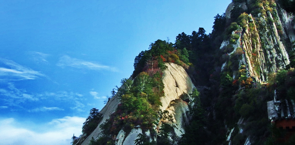
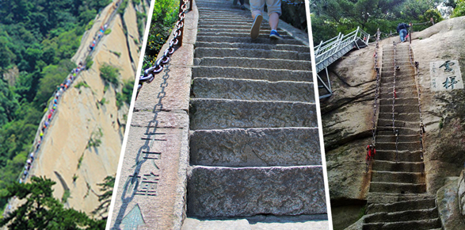
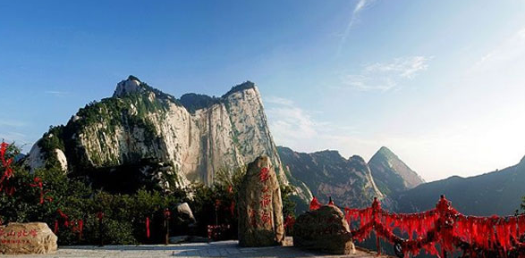
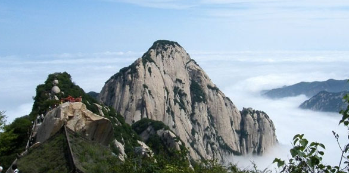
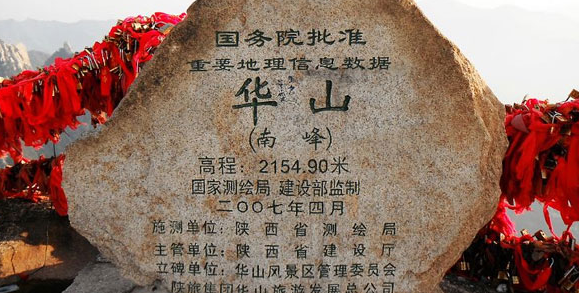
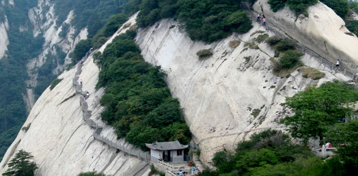

五岳之西岳华山
中国著名的五岳之一，中华文明的发祥地，“中华”和“华夏”之“华”。
- 如果今生只能体验一次自然，我选择登山； 如果今生只去一次登山，那必须是：华山！ 
- 十大险境 在华山有一句俗语“走路不看景，看景不走路”。其十大险境分别为长空栈道、鹞子翻身、云梯、苍龙岭、上天梯、老君犁沟、千尺幢、百尺峡、大上方、北斗坪。绝对是冒险爱好者的福地呀！ 
- 登东峰 赏日出胜景 看日出是到华山的招牌玩法，而东峰则是观日出的最佳地，因其峰顶有一平台，居高临险，视野非常开阔。每当晴天破晓之际，一轮红日冉冉升起，周围许多如削如切的山峰在旭日的照耀下，显得非常瑰丽。而东峰周围还有许多参天古松，浓荫蔽日，环境非常清幽，给人心旷神怡的感觉。 
- 北峰 观华山云雾 华山的北峰，也称云台峰，绝顶处有一平台是观赏云雾胜景的绝佳地，放眼望去，厚厚的云层在天边翻滚，象大海一样波涛汹涌，气势磅礴。当太阳穿过云层把余辉洒向山崖之时，云雾便会盘绕在崇山峻岭之上，这时的云朵还会变换出各种形状，非常动人。 
- 南峰 感受天近咫尺的奇妙 南峰是华山的最高主峰，被尊称为“华山元首”。登上南峰绝顶，顿感天近咫尺，星斗可摘，举目环视，只见群山起伏，苍苍莽莽，使人真正领略到华山高峻雄伟的博大气势，享受如临天界，如履浮云的神奇情趣。另外，南峰一峰二顶，东顶的松桧峰，山间松林迤逦数里，还有桧柏夹杂期间，葱葱郁郁甚是壮观。 
- 夜登华山 体验特色玩法 华山很险，险的令人无法正视，但人们却又迷恋于这种惊险，于是选择了在夜色的掩映下攀登华山，这也是体验华山最特色的玩法。月夜的华山有一种朦胧与俊秀结合的独特美感，一路上攀登的人很多，夜色中遥望苍龙岭一带，只看到远远的无数灯点排成笔直一线，斜向天际，慢慢向上移动，这是游人打着手电或头灯在岭上攀登，看去宛如登天。 